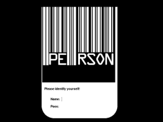

XDM
Dieser Artikel wurde für die folgenden Ubuntu-Versionen getestet:
Dieser Artikel ist größtenteils für alle Ubuntu-Versionen gültig.
Zum Verständnis dieses Artikels sind folgende Seiten hilfreich:
Der X Display Manager (XDM) ist ein altbewährter Displaymanager, der optisch sehr schlicht, dafür aber sparsam im Speicherverbrauch ist und keine zusätzlichen Pakete benötigt. Es handelt sich historisch gesehen um den ersten Displaymanager, auf dessen Grundlage im Laufe der Jahre zahlreiche weitere entwickelt worden sind.
Installation¶
Es muss das folgende Paket installiert [1] werden:
xdm (universe)
 mit apturl
mit apturl
Paketliste zum Kopieren:
sudo apt-get install xdm
sudo aptitude install xdm
Wenn schon ein anderer Displaymanager wie LightDM oder KDM installiert ist, wird man nach der Installation gefragt, welcher Displaymanager verwendet werden soll. Hier muss xdm ausgewählt werden.
Konfiguration¶
Da man beim Anmelden via XDM keinen Fenstermanager festlegen kann, muss man den bevorzugten Fenstermanager in der Datei ~/.xsession angeben. Wie das geht, steht im Artikel Displaymanager.
Aussehen anpassen¶
Nach der Installation sieht XDM sehr schlicht aus. Um das zu ändern, muss die Datei /etc/X11/xdm/Xresources in einem Editor [2] mit Root-Rechten [3] bearbeitet werden. Vorher sollte man von diesem Ordner eine Sicherungskopie erstellen, um bei Problemfällen auf ein Backup zurückgreifen zu können.
Begrüßung und Prompt¶
Ein Begrüßungstext:
xlogin*greeting: Willkommen auf (CLIENTHOST)
Text vor dem Benutzername und Passwort:
xlogin*namePrompt: Anmeldung:\040 xlogin*passwdPrompt: Passwort:\040
Bei Falscheingabe des Benutzernamens oder Passworts kommt dieser Text:
xlogin*fail: Login fehlgeschlagen!
Schriftarten¶
Mit dem Befehl [4]:
xfontsel
aus dem Paket x11-utils werden Schriftarten definiert. Um eine Schriftart auswählen, dient der folgende Abschnitt:
xlogin*greetFont:-adobe-helvetica-bold-r-normal-*-14-140-75-*-*-*-iso8859-1 xlogin*font: -adobe-helvetica-bold-r-normal-*-14-140-75-*-*-*-iso8859-1 xlogin*promptFont: -adobe-helvetica-bold-r-normal-*-14-140-75-*-*-*-iso8859-1 xlogin*failFont: -adobe-helvetica-bold-r-normal-*-14-140-75-*-*-*-iso8859-1
Aussehen¶
Debian Logo ersetzen¶
Um das Debian-Logo zu ersetzen, wird folgende Zeile bearbeitet:
xlogin*logoFileName: /usr/share/X11/xdm/pixmaps/debian.xpm
Man kann dort eine .xpm-Datei nach Wunsch einfügen. Um überhaupt kein Logo zu verwenden, wird diese Zeile gelöscht.
Größe und Position der Login-Box¶
Die ersten beiden Werte geben Länge und Höhe der Loginbox an. Die anderen beiden Werte geben die x- und y-Position am Bildschirm an:
xlogin*geometry: 130x130+0+0
Die im Beispiel gewählten Werte ergeben eine quadratische Loginbox, die in der linken oberen Ecke positioniert ist.
Rahmenbreite¶
Um die Breite des Rahmens um die Loginbox zu verändern, bearbeitet man diese Zeilen:
xlogin*borderWidth: 0
xlogin*useShape: false xlogin*innerFramesWidth: 0
Farbgebung¶
xlogin*shdColor- die Hintergrundfarbe der Texteingabeboxenxlogin*background- die Hintergrundfarbe der Loginboxxlogin*foreground- die Standardschriftfarbexlogin*greetColor- die Farbe des Begrüßungstextsxlogin*failColor- die Farbe der Ausgabe bei fehlgeschlagenem Login
Beispiel:
xlogin*shdColor: grey30 xlogin*background: Darkred xlogin*foreground: darkgreen xlogin*greetColor: Blue3 xlogin*failColor: red
Logo-Padding¶
Mit folgender Zeile wird der Abstand vom Logo zur Schrift geregelt:
xlogin*logoPadding: 10
Verwendet man kein Logo (siehe oben), kann auch diese Zeile gelöscht werden.
Hintergrund¶

Farbiger Hintergrund¶
Um einen farbigen Hintergrund zu erhalten, benötigt man das Paket:
x11-xserver-utils
Danach erstellt man eine Datei /etc/X11/xdm/Xsetup_0 mit folgenden Inhalt und macht sie ausführbar [5]:
#!/bin/bash xsetroot -solid DarkBlue
In der Datei /etc/X11/xdm/xdm-config wird dann diese Zeile eingefügt:
DisplayManager*setup: /etc/X11/xdm/Xsetup_0
Nach dem Neustart des XDM sollte jetzt ein roter Anmeldeschirm auf blauem Hintergrund zu sehen sein.
Hintergrundbild¶
Um ein Hintergrundbild anzuzeigen, gibt es verschiedene Programme. Hier wird das Programm display aus ImageMagick verwendet. Um ein Hintergrundbild zu verwenden, erstellt man zuerst eine Datei /etc/X11/xdm/Xsetup_0 mit folgendem Inhalt [4]:
#!/bin/bash /usr/bin/display -resize 1024x768 -window root /PFAD/ZUM/HINTERGRUNDBILD.png
Die Option -resize wird hier benutzt, um das Bild auf die richtige Größe zu strecken, ist aber nicht zwingend erforderlich. In der Datei /etc/X11/xdm/xdm-config wird dann diese Zeile eingefügt:
DisplayManager*setup: /etc/X11/xdm/Xsetup_0
Nach dem Neustart des XDM sollte jetzt das gewählte Hintergrundbild zu sehen sein.
Nach einigen wenigen Optimierungen kann XDM wie in der obigen Abbildung aussehen. Wenn man also ein bisschen Hand anlegt, kann man ein schönes und nicht überladenes Login-Fenster bekommen. Das XDM-Theme kann als dm-theme-person.tar.gz  heruntergeladen und muss nach /etc/X11/ entpackt werden [6].
heruntergeladen und muss nach /etc/X11/ entpackt werden [6].
Problembehebung¶
Riesige Schriftdarstellung:¶
XDM aus den Debian-Derivaten hat unter Umständen das Problem, dass die Schriftarten riesig dargestellt werden - obwohl man die Schriftart und Schriftgröße ausdrücklich angegeben hat (zum Fehler auf Launchpad). Der Grund dafür ist, dass für die jeweiligen Elemente zusätzlich ein Attribut namens Face angegeben werden muss.
Ein Beispiel anhand der hier verwendeten Schriftart und der Schriftgröße 10px:
xlogin*greetFace: Helvetica-10 xlogin*Face: Helvetica-10 xlogin*promptFace: Helvetica-10 xlogin*failFace: Helvetica-10
Nicht genutzte Schriftarten¶
Falls trotz der direkten Angabe einer Schriftart diese nicht verwendet wird, kann man gegebenenfalls XDM nach einer passenden Schriftart eines anderen Herstellers suchen lassen, indem man nur die Schriftart (und die ggf. benötigten Werte) angibt:
Hier einige Demonstrationsbeispiele:
xlogin*greetFont:- *helvetica* xlogin*font: *adobe-helvetica*-14-* xlogin*promptFont: *helvetica*-iso8859-1 xlogin*failFont: *helvetica-bold*

 Übersichtsartikel
Übersichtsartikel- Erstellt mit Inyoka
-
 2004 – 2017 ubuntuusers.de • Einige Rechte vorbehalten
2004 – 2017 ubuntuusers.de • Einige Rechte vorbehalten
Lizenz • Kontakt • Datenschutz • Impressum • Serverstatus -
Serverhousing gespendet von